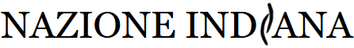

di Giorgiomaria Cornelio
C’è qualcosa di sospetto in tutti quei libri che prospettano al lettore qualcosa di “diverso,” di cantare fuori dal coro, di essere appunto “eretici” come promette il titolo dell’ultimo saggio di Alessandro Baricco “Breve storia eretica della Musica Classica.” Specialmente in ambito storico, queste affermazione di diversità giustificano i sospetti; il messaggio di fondo pare essere che, fin’ora, qualcuno ci avesse nascosto qualcosa, qualcosa che solo ora ci viene finalmente rivelato. Questo tipo di promesse raramente vengono mantenute dall’autore, il più delle volte il prezzo da pagare per dire qualcosa di diverso è dire semplicemente qualcosa di falso. Ciò accade perché è difficile che qualcuno ci nasconda qualcosa, e nel caso specifico viene difficile immaginare quali nascondimenti possano venire operati in Storia della Musica. Si potrebbe pensare che anche questa Storia eretica di Baricco cada nella categoria, ma non è così o meglio lo è solo in parte. In cosa consiste dunque, questa eresia? Il libro ha una struttura ad aforismi come La Gaia Scienza, e come ne La Gaia Scienza gli aforismi variano ampiamente in lunghezza, da due righe a due pagine. Numerati, la numerazione si interrompe in ognuno dei sette capitoli che affrontano in ordine (quasi) cronologico la storia della musica occidentale, da Pitagora (o Giamblico) a Stravinskij. Il libro inizia, come molti manuali di storia della musica convenzionali, con il problema del temperamento. Il tema è trattato in maniera piuttosto confusionaria, con molte
LASCIA UN COMMENTO